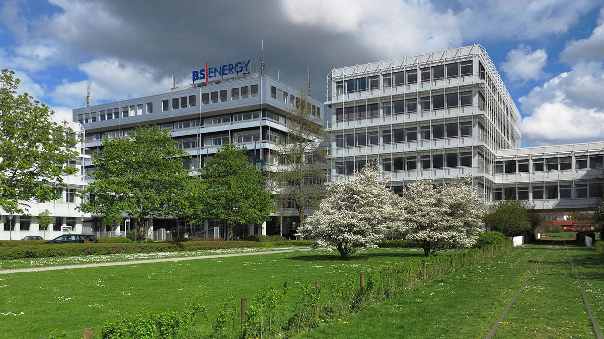

독일 브라운슈바이크 에너지회사 대주주 베올리아 "지분 50.1% 팔겠다"…시 "되사들일 수 있는지 곧 협의"

2002년 시가 지분 74.9%를 민간에 넘긴 지 24년 만에 재공영화 갈림길…지분은 베올리아 50.1%·시 25.1%·튀가 24.8%, 직원 1,200명 넘어
프랑스 베올리아(Veolia) 그룹의 독일 자회사 베올리아 도이칠란트가 니더작센주 브라운슈바이크의 지역 에너지회사 BS 에네르기(BS Energy) 지분 50.1%를 팔겠다는 뜻을 이번 주 초 토르스텐 코른블룸(Thorsten Kornblum) 시장에게 서면으로 알렸다. 나머지 지분은 브라운슈바이크시가 25.1%, 지역 에너지회사 지분 투자사 튀가(Thüga AG)가 24.8%를 갖고 있으며, 시는 베올리아가 그룹 전략 재정비를 이유로 들면서 기존 두 소수 주주에게 파는 쪽을 바라지만 다른 매각 구도도 준비하고 있다고 밝혔다. 브라운슈바이크시는 2002년 이 회사 지분 74.9%를 미국 에너지기업 TXU에 넘겼고, 곧 유럽 시장에서 물러난 TXU의 몫을 베올리아가 이어받아 2005년부터 대주주가 됐으며, 2018년에는 튀가가 베올리아 지분 일부를 사들여 주주로 들어왔다. 시는 이번 결정을 "분명히 유감"이라고 밝히고, 곧 베올리아와 협의해 그 지분을 사들일 수 있는지 알아보겠다며 시간이 걸리겠지만 결과가 나오면 시 의회와 시민에게 알리겠다고 했다. 지자체 공기업 연합회 VKU 회장(명예직)도 맡고 있는 코른블룸 시장은 지난 6월 재공영화 가능성을 묻는 질문에 전국 지자체의 어려운 재정 형편을 들어 즉답을 피한 바 있다. BS 에네르기는 직원이 1,200명을 넘고, 기프호른·엘름-라프발트·슈프링에 등 주변 지역 에너지회사 지분도 갖고 있다.
시민에너지 관점
24년 전 시가 넘긴 지역 에너지회사의 과반 지분이 다시 매물로 나왔다는 것은, 한번 민간에 넘어간 지역 에너지 기반시설도 되찾을 기회가 언젠가 온다는 것을 보여 준다. 지자체 살림이 빠듯해 과반 지분을 혼자 사들이기 어렵다는 걱정이 가장 크겠지만, 독일 헤센주 볼프하겐처럼 주민 에너지협동조합이 시 에너지회사 지분 일부를 사들여 시와 함께 주인이 된 사례도 있어 시 재정과 주민 출자를 묶으면 부담은 나누고 결정권은 지역에 남길 수 있다. 전기·열 요금과 투자 방향을 정하는 회사가 지역 소유일 때 그 수익도 배당으로 지역 밖에 빠져나가지 않고 지역에 머문다. 국내 지자체도 에너지 공기업이나 공공 발전 법인을 세우거나 지분을 정리할 때, 주민과 협동조합이 함께 출자할 자리를 처음부터 정관에 마련해 두어야 한다.
출처: ZfK 2026-10-29 Hans-Peter Hoeren 원문 보기
ドイツ・ブラウンシュヴァイクのエネルギー会社、筆頭株主ヴェオリアが「持ち分50.1％を売却」…市「買い戻せるか近く協議」
2002年に市が持ち分74.9％を民間に譲ってから24年、再公営化の分かれ道…持ち分はヴェオリア50.1％・市25.1％・テューガ24.8％、従業員1,200人超
フランスのヴェオリア（Veolia）グループのドイツ子会社ヴェオリア・ドイチュラントは今週初め、ニーダーザクセン州ブラウンシュヴァイクの地域エネルギー会社BSエナジー（BS Energy）の持ち分50.1％を売却する意向を、トルステン・コルンブルーム（Thorsten Kornblum）市長に書面で伝えた。残りの持ち分はブラウンシュヴァイク市が25.1％、地域エネルギー会社への出資会社テューガ（Thüga AG）が24.8％を持っており、市によると、ヴェオリアはグループ戦略の見直しを理由に挙げ、既存の少数株主2者への売却を望みつつ、別の売却の形も準備しているという。ブラウンシュヴァイク市は2002年にこの会社の持ち分74.9％を米国のエネルギー企業TXUに譲り、まもなく欧州市場から撤退したTXUの持ち分をヴェオリアが引き継いで2005年から筆頭株主となり、2018年にはテューガがヴェオリアの持ち分の一部を買い取って株主に加わった。市は今回の決定を「はっきりと遺憾」とし、近くヴェオリアと協議してその持ち分を買い取れるかどうかを探ると述べ、時間はかかるが結果が出れば市議会と市民に知らせるとした。自治体公営企業連合会VKUの会長（名誉職）も務めるコルンブルーム市長は、今年6月、再公営化の可能性を問われた際、全国の自治体の厳しい財政事情を挙げて明言を避けていた。BSエナジーは従業員が1,200人を超え、ギフホルン、エルム＝ラップヴァルト、シュプリンゲなど周辺の地域エネルギー会社にも出資している。
市民エネルギーの視点
24年前に市が手放した地域エネルギー会社の過半の持ち分が再び売りに出たことは、いったん民間に渡った地域のエネルギー基盤も、いつか取り戻す機会が来ることを示している。自治体の台所事情が厳しく、過半の持ち分を単独で買い取るのは難しいという懸念が最も大きいだろうが、ドイツ・ヘッセン州ヴォルフハーゲンのように住民のエネルギー協同組合が市のエネルギー会社の持ち分の一部を買い取り、市とともに所有者となった例もあり、市の財政と住民の出資を組み合わせれば、負担は分け合いながら決定権を地域に残すことができる。電気や熱の料金と投資の方向を決める会社が地域の所有であれば、その収益も配当として地域の外に流れ出ず、地域にとどまる。韓国の自治体も、エネルギー公社や公共の発電法人をつくったり持ち分を整理したりする際には、住民と協同組合がともに出資できる席を最初から定款に設けておくべきだ。
出典: ZfK 2026-10-29 Hans-Peter Hoeren 原文を読む
德国不伦瑞克能源公司大股东威立雅"拟出售50.1%股份"，市政府"将尽快协商能否回购"
市政府2002年将74.9%股份让给民营企业，24年后站在重新公营化的岔路口；股权为威立雅50.1%、市政府25.1%、图加24.8%，员工超过1,200人
法国威立雅（Veolia）集团的德国子公司威立雅德国本周初以书面形式通知不伦瑞克市长托尔斯滕·科恩布卢姆（Thorsten Kornblum），表示有意出售其持有的下萨克森州不伦瑞克地方能源公司BS能源（BS Energy）50.1%的股份。其余股份由不伦瑞克市政府持有25.1%、专门投资地方能源公司的图加（Thüga AG）持有24.8%。据市政府介绍，威立雅以集团战略调整为由，希望优先出售给现有的两家小股东，但也在为其他出售方案做准备。不伦瑞克市政府曾于2002年将该公司74.9%的股份转让给美国能源企业TXU，不久后TXU退出欧洲市场，威立雅接手其股份，自2005年起成为大股东；2018年图加从威立雅手中买下部分股份，成为股东。市政府表示对这一决定"明确表示遗憾"，将尽快与威立雅协商，探讨能否收购这部分股份，虽然需要一些时间，但一旦有结果将向市议会和市民通报。兼任地方公营企业联合会VKU会长（荣誉职务）的科恩布卢姆市长今年6月被问及重新公营化的可能性时，曾以全国地方政府财政困难为由回避正面回答。BS能源员工超过1,200人，还持有吉夫霍恩、埃尔姆-拉普瓦尔德、施普林格等周边地方能源公司的股份。
市民能源视角
市政府24年前让出的地方能源公司过半股份再次挂牌出售，说明地方能源基础设施即使一度落入民营之手，也终会迎来收回的机会。最大的担忧或许是地方财政紧张，难以独自买下过半股份；但在德国黑森州沃尔夫哈根，居民能源合作社曾买下市属能源公司的部分股份，与市政府共同成为所有者。把市政府财政与居民出资结合起来，就能分担负担，同时把决定权留在本地。决定电价、热价和投资方向的公司归本地所有，其收益也不会以分红形式流出，而会留在本地。韩国地方政府在设立能源公社或公共发电法人、调整股权时，也应从一开始就在章程中为居民和合作社共同出资留出位置。
来源: ZfK 2026-10-29 Hans-Peter Hoeren 查看原文
Majority owner Veolia to sell 50.1% of Braunschweig energy company BS Energy; city to "explore buying it back soon"
A remunicipalisation crossroads 24 years after the city sold 74.9% to private hands; shares held by Veolia 50.1%, the city 25.1% and Thüga 24.8%; more than 1,200 staff
Veolia Deutschland, the German arm of France's Veolia group, informed Braunschweig Mayor Thorsten Kornblum in writing early this week that it intends to sell its 50.1% stake in BS Energy, the local energy company of the Lower Saxony city. The remaining shares are held by the City of Braunschweig (25.1%) and Thüga AG (24.8%), an investor in local energy utilities, and the city said Veolia, citing a review of its group strategy, would prefer to sell to the two existing minority shareholders but is also preparing for other arrangements. Braunschweig sold 74.9% of the company to the US energy firm TXU in 2002; Veolia took over that holding after TXU soon withdrew from Europe and has been majority owner since 2005, while Thüga bought part of Veolia's stake and joined as a shareholder in 2018. The city said it "expressly regrets" the decision and will soon open talks with Veolia to explore whether it can acquire the stake, adding that the talks will take time and that the city council and the public will be informed once a result is in sight. Kornblum, who also serves in an honorary capacity as president of VKU, the association of municipal utilities, sidestepped a question in June about possible remunicipalisation, pointing to the tight finances of local governments across Germany. BS Energy employs more than 1,200 people and holds stakes in several neighbouring local utilities, including Gifhorn, Elm-Lappwald and Springe.
Citizen Energy View
That a majority stake in a local energy company the city sold 24 years ago is back on the market shows that even energy infrastructure once handed to private owners can, at some point, be won back. The biggest worry will be that a cash-strapped council cannot buy a majority stake on its own, but in Wolfhagen in the German state of Hesse a residents' energy cooperative bought part of the municipal utility and became a co-owner alongside the town, showing that combining public money with citizen investment can share the burden while keeping control local. When the company that sets electricity and heat prices and decides on investment is locally owned, its profits stay in the area rather than leaving as dividends. Korean local governments, too, should write a place for residents and cooperatives to invest into the articles of association from the start whenever they create a municipal energy company or public generation entity or restructure its shareholdings.
Source: ZfK 2026-10-29 Hans-Peter Hoeren Read the original